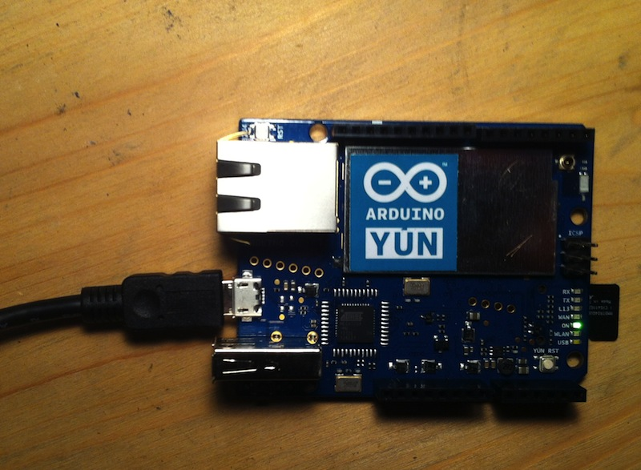
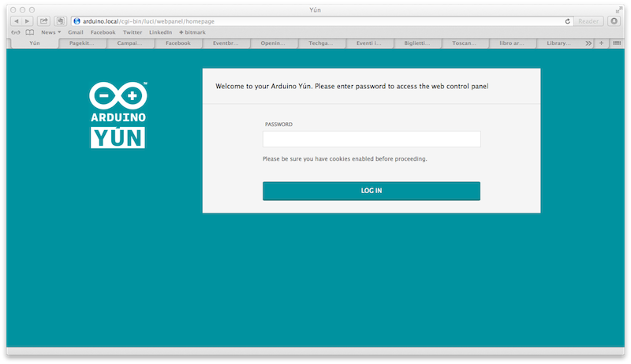
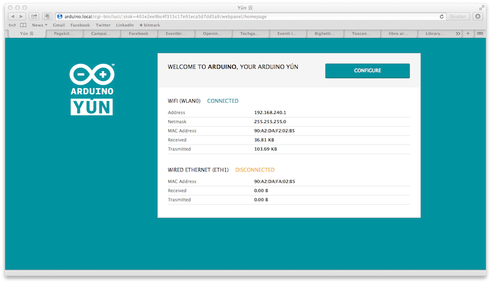
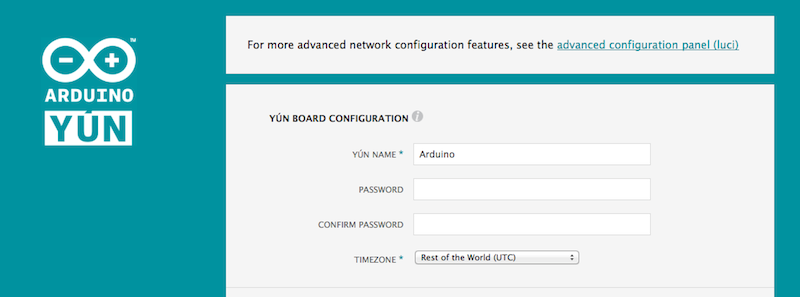
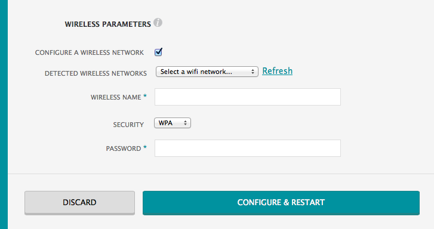
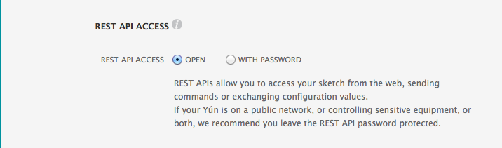
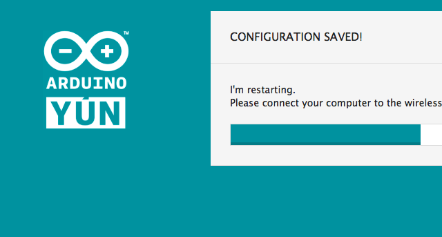
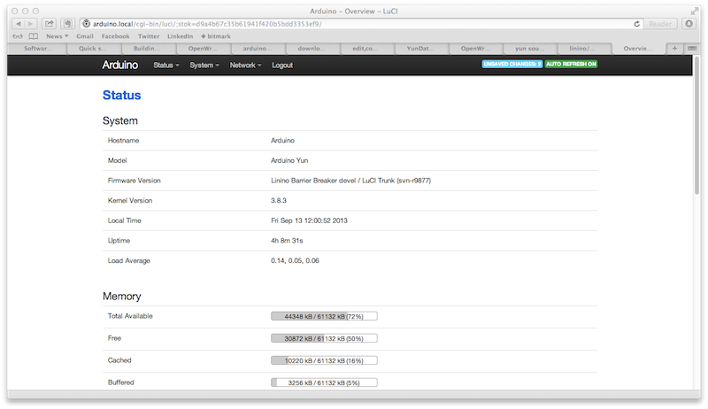
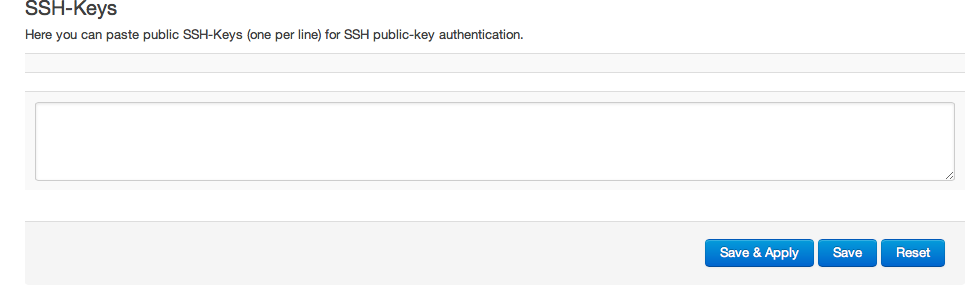
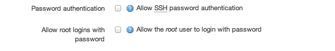

I just received my Arduino YUN, a new product from Officine Arduino bridging the gap between microcontrollers and embedded Linux devices.
The YUN packs in the form factor both devices, also adding USB, Wifi, Ethernet connectivity.
I think many people willing to buy it could find interesting to learn how it works, and also some newbies could need some help to get started using it, so here's a quick guide of the steps to follow to get the YUN configured using a WiFi network connection:
1) plug the mini-USB port on the YUN to your computer or to a usb-compatible charger using a mini-USB cable

2) go to your wifi-enabled computer, and after few seconds you should find a Arduino-YUN-XXX network you can connect to
3) Once you joined the network, fire up your web browser and visit http://arduino.local, you will be presented with the following screen

4) Type the default password which is "arduino"
5) The following screen will show you the current network status, telling you if you're connected via wifi or ethernet.

6) Now hit the configure button. At this point you will be prompted with a new screen, allowing to configure your password, it should be at least 8 chars long

7) Scroll down, and configure access to you existing wireless network. Choose from the selection your network name, the kind of encryption you are using (most common is WPA) and the password you usually set to access your network.

8) On the bottom of the page you are able to set a protection on access to sketches from the REST interface. If you don't know what this means, and in any case, it is safe to set this to "With password".

9) Hit configure and restart. Now you can switch back to your existing wifi connection. If you did set your config data correctly the Arduino YUN should be again reachable using the http://arduino.local address, asking for the password you did set up at step 6).

10) Optional - If you plan to access your Arduino YUN using ssh, I recommend to set up private key based login instead of plain old passwords: not only it is more secure (your password might be guessed, but nobody will be able to guess your private key), but more practical so you don't have to type the password every time.
If you want to set it, just hit Configure on the main screen shown after inserting the password, when a new page loads, on the top of the page you will now select "advanced configuration panel", select it and you will be presented with the Administration panel:
Now select the System menu and the Administration option. You will be presented with a new form, allowing also to change the system password.

Now scroll down to SSH Keys, and paste in your SSH Certificate, then hit "Save and Apply". If you don't have one you can follow this tutorial to generate one. At the end you should come up with something like
ssh-rsa AAAAB3NzaC1yc2EAAAABIwAAAQEAklOUpkDHrfHY17SbrmTIpNLTGK9Tjom/BWDSU
GPl+nafzlHDTYW7hdI4yZ5ew18JH4JW9jbhUFrviQzM7xlELEVf4h9lFX5QVkbPppSwg0cda3
Pbv7kOdJ/MTyBlWXFCR+HAo3FXRitBqxiX1nKhXpHAZsMciLq8V6RjsNAQwdsdMFvSlVK/7XA
t3FaoJoAsncM1Q9x5+3V0Ww68/eIFmb1zuUFljQJKprrX88XypNDvjYNby6vw/Pb0rwert/En
mZ+AW4OZPnTPI89ZPmVMLuayrD2cE86Z/il8b+gw3r3+1nKatmIkjn2so1d01QraTlMqVSsbx
NrRFi9wrf+M7Q== schacon@agadorlaptop.local
that you can copy and paste in the textarea.

Once you are done, and applied the change you can try (depending on your platform) to ssh to the YUN using
ssh root@arduino.local
if the command doesn't ask you for a password, you are set up, and can move on to step 12. If it doesn't check you followed the instruction or ask for help to a friend or in a Linux forum.
12) If your passwordless ssh worked you can now disable password-based access to the YUN. Go back to the System > Administration menu item, under the SSH Access header and uncheck the following checkfields

apply your changes, and you are done.
13) Where to go from here:
- check out the Bridge Library to interact with the digital and analog pins via the web interface
- take a look at the Bridge Library examples to learn how you can call Linux-side commands via Arduino Sketches
I hope you found this useful, if so I'll write more tutorials on the features offered by the Administration panel. Have fun with your YUN!
Comments !